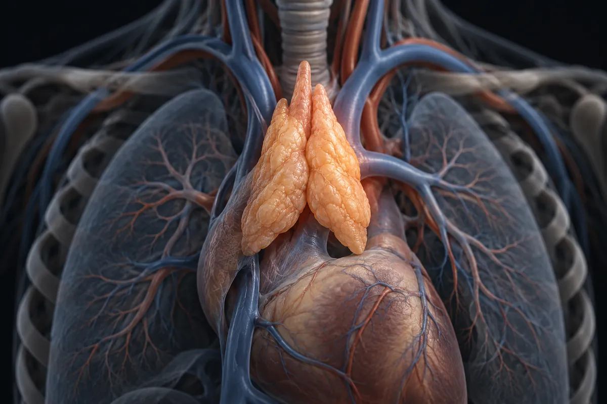

Thymus et Cardiogen — thymuline, thymopentine et le biorégulateur du cœur
La thymuline a 886 articles et zéro étude enregistrée. La thymopentine a des enregistrements dans le VIH sous le nom commercial Timunox. Le Cardiogen partage son nom avec un générateur de rubidium utilisé en examen cardiaque

Matériel expérimental. Lisez avant d’utiliser quoi que ce soit d’ici.
Rien sur cette page n’est une recommandation médicale, une prescription ou un plan de traitement. C’est une traduction organisée de protocoles qui circulent dans des communautés de recherche et, quand cela existe, de ce que des essais publiés ont testé. Les deux choses sont marquées différemment — et ne sont pas équivalentes.
La plupart des composés ici n’ont pas d’approbation de la FDA pour un usage humain. Plusieurs sont vendus avec l’étiquette « usage exclusivement en recherche », ce qui signifie qu’ils n’ont passé aucun contrôle de pureté, de stérilité ou de dosage pour une consommation par des personnes. Une dose décrite par la communauté n’est pas une dose validée : c’est ce que quelqu’un a rapporté avoir fait.
Parlez avec un professionnel de santé habilité avant d’envisager l’un de ces composés. Si vous en utilisez déjà un et ressentez quelque chose d’imprévu, consultez — n’attendez pas le prochain examen de routine.
Résumé
Deux facteurs du thymus qui manquaient — thymuline et thymopentine (TP-5) — et le Cardiogen, biorégulateur cardiaque de l'école de Khavinson. Molécules anciennes, beaucoup de physiologie, presque aucun essai, et aucune avec un produit enregistré au Brésil.
Facteurs du thymus et le biorégulateur du cœur
Le site a déjà la thymosine alpha-1, le Thymalin et les biorégulateurs courts de Khavinson. Il manquait deux facteurs du thymus — la thymuline et la thymopentine (TP-5) — et le Cardiogen, le biorégulateur « du cœur » de la même école russe.
Deux réserves de méthode. Un : cardiogen seul sur PubMed et sur ClinicalTrials.gov renvoie le CardioGen-82, un générateur de rubidium-82 utilisé en imagerie cardiaque, qui n'a rien à voir avec le peptide. J'ai restreint la recherche avec AND (peptide OR Khavinson) ; le seul enregistrement de la recherche sans filtre sur ClinicalTrials.gov porte sur un examen de TEP avec CardioGen-82. Deux : dans la base des médicaments enregistrés au Brésil, le motif TIMULIN trouve un enregistrement — mais de thymostimuline, un autre extrait du thymus, dont le nom contient les mêmes lettres. Je publie la trouvaille avec la réserve : il n'y a pas d'enregistrement de thymuline.
Aucun chiffre de cette page ne vient de la source secondaire du site.
Combien de preuves existent, composé par composé
Les chiffres ci-dessous ont été relevés par moi le 5 octobre 2026, sur PubMed et sur ClinicalTrials.gov. La requête de chaque ligne est écrite en entier, à côté du chiffre, pour que n'importe qui puisse la reproduire et me contredire — et pour que le script qui revérifie les décomptes de ce site puisse toutes les exécuter.
La colonne de condition n'est pas une affirmation de mécanisme : c'est le champ Condition copié du plus grand enregistrement de phase 3 que la recherche elle-même a renvoyé. Quand il n'y a pas d'enregistrement de phase 3, la cellule le dit.
| Composé | Condition dans les enregistrements de phase 3 | Requête | Articles dans PubMed | Études sur ClinicalTrials.gov |
|---|---|---|---|---|
| Thymuline | aucun enregistrement de phase 3 dans cette recherche | thymulin OR "serum thymic factor" OR "facteur thymique serique" | 886 | 0 |
| Thymopentine (TP-5) | Hepatocellular Carcinoma | thymopentin | 564 | 10 |
| Cardiogen | aucun enregistrement de phase 3 dans cette recherche | cardiogen AND (peptide OR Khavinson) | 9 | 0 |
Ce qui existe en phase 3, et à qui c'est
Le décompte d'articles mesure l'attention académique, pas une preuve de résultat. Le tableau ci-dessous distingue ce qui a un essai de phase 3 enregistré — et montre le plus grand enregistrement que la recherche a renvoyé, avec le nombre de participants déclaré et le promoteur. Un enregistrement n'est pas un résultat.
| Composé | Requête | Essais de phase 3 enregistrés | Le plus grand enregistrement que j'ai ouvert |
|---|---|---|---|
| Thymuline | (thymulin OR "serum thymic factor" OR "facteur thymique serique") AND AREA[Phase]PHASE3 | 0 | — |
| Thymopentine (TP-5) | (thymopentin) AND AREA[Phase]PHASE3 | 2 | NCT00460681 · n = 220 · Fudan University Hepatocellular Carcinoma |
| Cardiogen | (cardiogen AND (peptide OR Khavinson)) AND AREA[Phase]PHASE3 | 0 | — |
Là où le calcul ne tombe pas juste
- La thymuline a 886 articles et 0 étude enregistrée. Beaucoup de physiologie d'un facteur du thymus, et aucun enregistrement d'essai chez l'humain.
- La thymopentine a déjà eu un nom commercial — Timunox, dans le titre d'enregistrements sur le VIH. 7 des 10 enregistrements portent sur le VIH, tous du même promoteur et tous sans date de début renseignée. Le plus grand de phase 3 est un essai chinois dans le cancer du foie, au statut inconnu.
- Le Cardiogen a 9 articles et 0 étude — et seuls 4 des articles portent sur le peptide. J'ai lu les titres : les 4 sont des études de culture de tissu et sur le rat, de 2006 à 2010, dans une revue russe de gérontologie et dans un bulletin de biologie expérimentale. Les autres utilisent le mot dans un autre sens, même avec le filtre. Aucun n'est un essai chez l'humain.
Au Brésil
J'ai recherché chaque principe actif dans les données ouvertes des médicaments enregistrés au Brésil, téléchargées le 5 octobre 2026 — 43 596 lignes, en ne comptant que le statut Actif, dans le principe actif et dans le nom du produit, sans accents et sans distinction de casse. La classe thérapeutique est celle que la base elle-même déclare.
| Principe actif | Schéma recherché | Enregistrements actifs | Classe thérapeutique déclarée | Produits |
|---|---|---|---|---|
| Thymuline | TIMULIN | 1 | IMUNOMODULADOR | EXTRATO DE CÉLULAS TÍMICAS |
| Thymopentine (TP-5) | TIMOPENT | 0 | — | — |